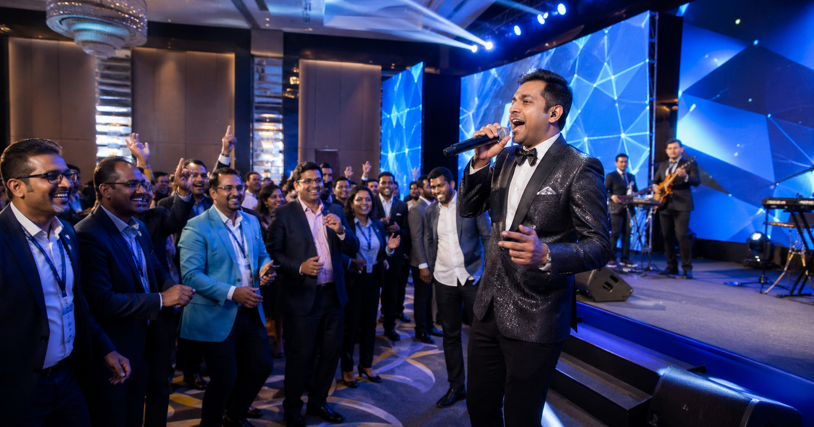

In today’s competitive market, businesses need creative ways to stand out. One of the most powerful tools emerging in modern branding is a corporate event song. Whether it’s a product launch, office celebration, or brand campaign, a custom song can transform your message into an unforgettable experience.
A corporate song is a professionally created, customized music track designed specifically for your brand or event. It includes custom lyrics, music composition, and production tailored to your business goals.
Unlike traditional advertising, a brand song connects emotionally with your audience and makes your brand memorable.
---A custom corporate song helps define your brand voice and creates a unique identity.
Music captures attention instantly and keeps audiences engaged longer than text or visuals.
People remember how they feel. A song builds emotional connection with your audience.
Events with custom music are more impactful and unforgettable.
---At Melody Box, we create professional corporate event songs designed to elevate your brand identity.
Music makes your brand easy to remember.
A custom song adds a premium feel to your brand.
Music content gets more shares and interaction.
Use your song across ads, events, and social media.
---Traditional Ads: Short attention span, easily ignored
Corporate Songs: Emotional, engaging, memorable
---A corporate event song is more than music—it’s your brand story in sound. It creates impact, builds connection, and leaves a lasting impression.
👉 Start today and give your brand a unique voice.